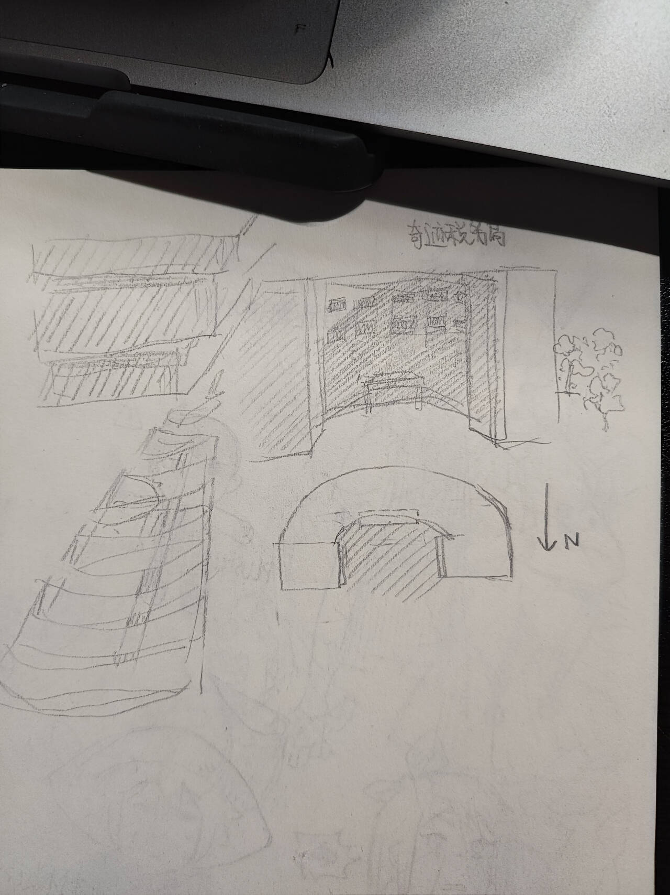
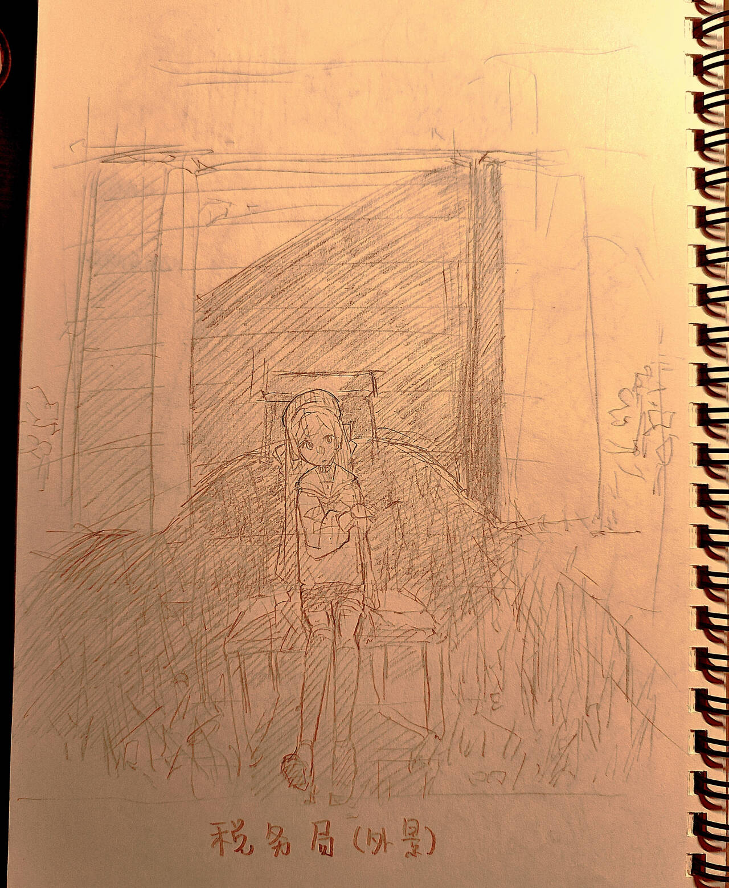
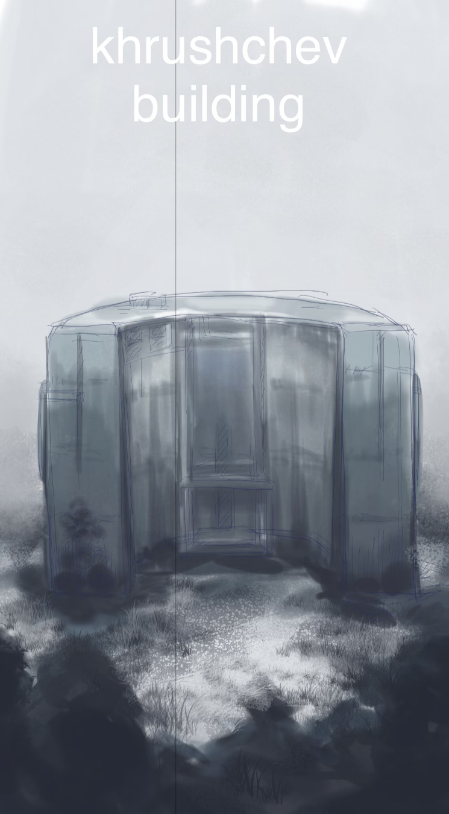
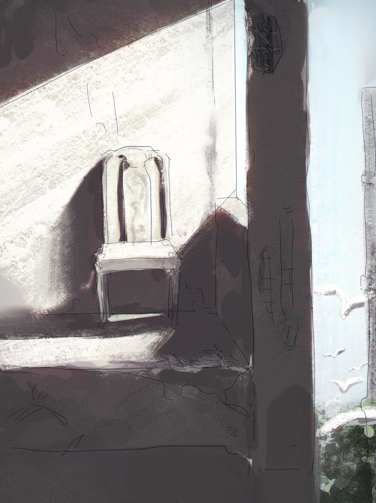
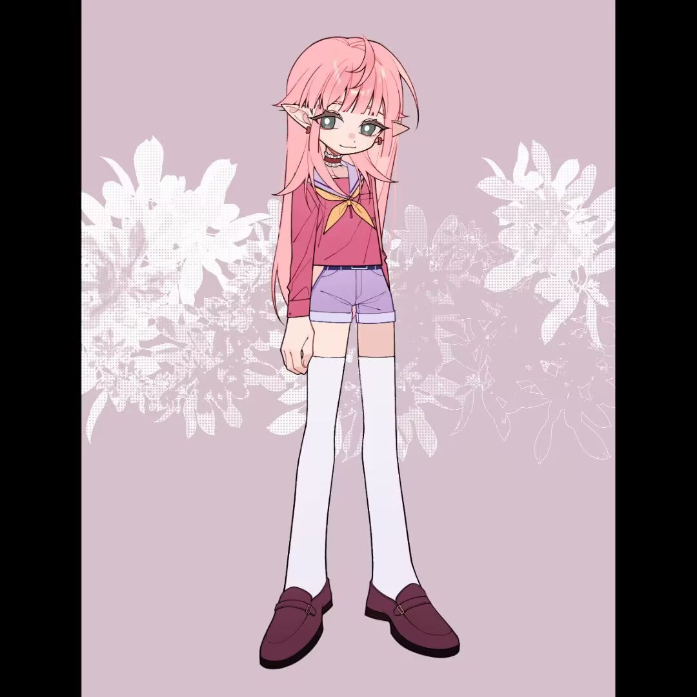
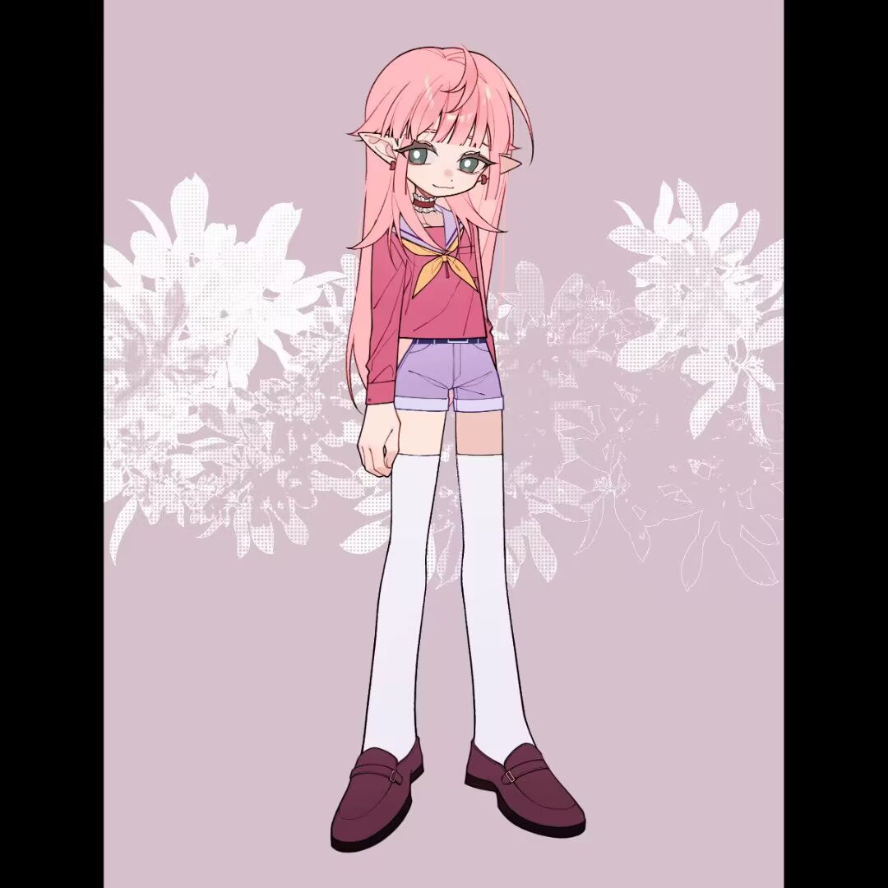

大概是wiki吧
政府_及非政府组织1
人物存档4
大纲一般的存在20
- 政府_及非政府组织奇迹税务局2青河3
- 奇迹税务局奇迹税务局——这是由神使之一，通称星野的男性所设立的收容机构，虽然叫税务局，但本质就是安置各种在现实和深渊之地都没有归处的物或人的一处庇护所。在2331～2335年间，星野创建了奇迹税务局，收留流浪“幸运儿”与外族。税务局的设定： 我想要补充这个庇护所的一些设定：首先你还记得我之前说的混沌大陆吗？ 混沌大陆顾名思义，是指这个地方的时间和空间非常的混乱，人们可以在它的里边像玩RPG游戏存档一样存档，然后因为回档或者存档听起来就会对时间或者空间造成影响，所以，混沌大陆的很多地方经常出现世间的混乱人，只要一接近那里，可能就会因为那边的时空混乱而变得再也不存在于这个世界上了，或许是被神隐了，或许也只是单纯的被时间和空间影响而变成了“从未存在过的人物”。所以混沌大陆因为缺乏统一的管理和混乱的状态，是很多犯罪还有无组织行动的天堂。 如果从混沌大陆滋生出一波可以对抗青河的民间力量，清河政府就会放出一些仿生人去消灭混沌大陆的这个组织。当然，仿生人也是需要人类数据，需要学习人类的知识，他们有可能就会存在一些感情或者所谓的生命。政府不把仿生人的权利当做权利的这件事情或许存在很多的道德伦理问题，因此也会有民间组织因此对抗或者指责政府，但是这些并不重要。 在混沌大陆离世界边缘比较近的地方（也就是完全远离人烟、非常非常荒芜的地方）有着一大片原始森林，这里太过于原始，所以基本上没有什么人来，因此这里的时空混乱尚且处在可以控制的状态，有一些有能力能够到达这里的人就会把这里当做他们的隐居地或者庇护所。 托马斯在被天使化的自己哄骗成为魔法少女，最终得不到俸禄分裂地死在这片森林时，正好就倒在了奇迹税务局——星野的庇护所，的附近，同时星野也目睹了这一切。 随后，hsn出于好意把托马斯带回了自己的奇迹税务局休养。稅务局是一处位于森林深处的粗野主义建筑，从外表来看是一个有一定弧度的，从外面看上去废弃了很久的混凝土建筑，仍旧保留着步入式大堂大门的结构，但是门口的矮台阶已经沉降了，附近的玻璃也碎得不见踪影；并且如果再仔细从外面看的话，就会发现税务局一楼之上的结构基本上是纯粹的烂尾房毛坯房的样子。 不过正因为这里没有什么时空的混乱，星野把一个个的存档存在这里，还有一些自己的秘密物品。他可以带别人进入这个建筑里的某一个时空，这个时空里，建筑里边是会有合适居住、舒适的房间的，一般一段相同时空里这个建筑里，会有1到3个这样的房间，也就是说，建筑外面的景色和建筑里边的房间所在的时空是不一样的；星野把税务局的房间人员安排的如此分散是为了防止这些住着的人互相揭发发现的冲突，和更多的时空混乱。 而对于在里边的住着的这些人来说，就拿托马斯来说吧，她所住着的这段时空里边只有她一个人有房间，也就是说，托马斯每天可以从家门走出去，但是走出去之后，无论走到税务局的哪个角落，都会发现是一致的毛坯钢筋混凝土结构，并不会有什么其他的东西存在。有时远离家门后还会走不回去，最稳妥的方法就是一直在家里呆着，受到保护，或者是让星野带着人出门，并且让星野把人带回来，只有他清楚正确的时间是在哪里的。 因此，居住在庇护所里边的人的必备物品一般一般都是这样的获取方式：他们会自己留下给星野的信息，然后星野会帮他们买过来。（即使生物科学很发达，也不可能出现凭空打印食物这样的事情啊！也需要有原料才可以打印，所以这样子的食品有些人可以接受，但是更多人还是需要外面可以买到的方便食品，毕竟他们也对那些食物更为熟悉） 同时，因为这里毕竟还是混沌大陆、时空混乱的原因，如果在期间税务局里面呆的时间过于的长，又无所事事的话，很可能会变成虚无的人，身体就会开始出现变形，最终可能成为像媒体中所说的“伪人”一样的黑影生物，游荡在夜晚的税务局的各个角落，当然，这样的黑影不会对家门里的世界产生任何影响，也没有办法做出什么实际的行动，只是很吓人、令人焦虑而已。税务局的构造/外观一栋看起来老旧的公社建筑，三栋弯着联排，两侧两栋直立在一旁。 外表看起来有些旧。从外面看这里的阳台，只见一个个洞入黑色的毛胚房一样荒凉 强行闯入会发现楼层是联通的。这里什么也没有，地上铺着一些树脂玻璃的碎片。空气中有一种炭疽粉末的味道。 生活在这里的人彼此互不相联（在时间与空间上，有时甚至不知道互相的存在），爬楼十分安静，绝对不会听到逃避者崩溃折磨的响声，也闻不到终于死了的人的尸臭。放轻松，星野会好好处理的。 如果你住在走廊的两侧，你会发现，黄昏时红色蜿蜒着凝固，最后成为走廊尽头拐角处看不见的未知色彩，如同sayo教的色调，怪吓人的。但是这里静悄悄，神秘秘，不会有鬼怪出没，或许住在这里的人也该有底气发现自己好像就是什么妖魔鬼怪。 房子还是是不是会闹鬼，这是为什么呢？过去参透了未来，未来给过去泼了墨水：无所谓，星野会出手。为了防止情况更复杂，星野给这里的神经网络拔了（断联了）。少上网，多看书！老古董星野如是说。 星野需要保证此处的过去与未来一成不变…住户离开后，房间的样子永远是不变的。“税务局”的档案室位于星野家，的地下室（离税务局很远）。这里记录了过去、现在、未来的这栋房子的资料（包括住在税务局里的那些人的资料），是税务局的记忆、概念等事物的存档处，星野在这里存放有关税务局的事物，管理着那些档案，只有他和米歇尔会去档案室。    内景设定：无人的一处角落，托马斯搬来凳子在这
- 青河
- 人物存档干冰5车里矢6车尔矢7米歇尔8涟漪9銀色的魔女10星野涙人11世界之主18Tu_chi19上原托马斯12
- 干冰在星野家时主要的作用是扮演“女主人”的身份，好让这座地处偏僻的庄园不要显得那么形迹可疑。
- 车里矢不辣女医生。弟弟-车尔矢7
- 车尔矢
- 米歇尔心思细腻的眯眯眼，作为天使长在天堂的圣学院担任挂职校长，能力是“阅读对方的弱点”。生前于神经网络的交互开发组被卷入了青河的政治漩涡，在青河多次利用技术侵略兼并外族后因愧疚顶罪自杀。
- 涟漪生前或许和空军有什么关系，但是当时总之是一名背刺姐，背刺别人太多了以至于下了地狱，或许存在着“偷改论文作者顺序功劳，擅自开走别人的飞机以至于追究错误到错误番号间接导致了朋友殒命，小时候房子塌了因为小恰好被卡在安全区其他人都死了”等桥段。很老了！大家对于涟漪的第一印象是一个非常傲慢的人，因此对过于不会表现情绪的人感到很头疼。 -能力和生育相关，以前的设定是杀死别人腹中胎儿，现在打算模糊一下写成“杀死腹中的生物”以便扩展！ -面相很年轻，目测二十岁左右的样子（实际在一千岁左右），眼睛是青绿色（偏绿，饱和度不高）；有一定的肌肉，健康匀称又视觉上很修长的身材，罩杯随心情和穿搭变化（因为不是人啊！）。 -在动物化的地狱成为了恶毒的蛇，异化生长出尖尖的黑黑的犄角，（于是有雅号是电光毒龙钻），年龄很大的地狱劳改犯（已出地狱版）；双性，在性方面态度比较顺其自然，正常人的范畴！ -武器是黑色的短柄镰刀（上面还别着几朵玫瑰花），然而并不怎么使用，只是起到威慑作用；在熟人面前甚至把镰刀当成道具用来凹造型，此时还会给镰刀缠上藤蔓；她的镰刀更多地被用于种田耕地，并不好用！但是她借此以消耗体力和消磨时间。 -其实非常向往成为天使或是神使，她的耳饰实际上是潮流版十字架，还是正着的，有巨多十字架choker，衣服也是浅色系巨多（更偏向少女感觉的衣服），公式的水手服甚至有十字架的印花。 -在HSN居所的湖心小岛过着田园生活，每天钓鱼种地，和hsn认识后偶尔去串门；平均一个月左右会出去购物，由于没有办法收起犄角所以需要混入爱好者们的队伍，此时会为自己和认识的人购买些伴手礼，真是惬意呢！然而除了当前选择的生活方式以外，无论是在地狱的时间还是活着的时候，她从来没有感到舒适过，一直想要摆脱当下的环境。 -最近培养了一个新爱好：捡小孩，涟漪寻找到许多在QH游荡又无家可归的幽灵体，并且建立了一座修道院以供他们居住。-对hsn的态度：虽然对hsn没有什么影响，但是涟漪接触hsn后感到很头疼，之前与自己交往的人里没遇到过这种真情实感“对对嗯嗯”又没其他话可说的人，甚至都不知道从背刺的角度该如何考虑！但是这样多了又会觉得hsn似乎总是在心安理得地接受，明明hsn不是那么理解自己，hsn似懂非懂又包容她的样子让她感觉自己反而被可怜与蔑视了！她极度地好奇hsn到底在干嘛和平时是怎么想的。她第三次左右去串门的时候就被hsn问到底为了什么而来：”是因为想草我吗？“涟漪实在太好奇了hsn究竟脑袋怎么长得为什么问这种话就和hsn上床了；之后收获了一枚听话的泄欲奴隶（此处可以插播一点G向的），在有一次被hsn问”你是否通过虐待我来构建自我“后破防地对hsn产生了一丝丝的恨意。 之后就是看着hsn逐渐变得幸福起来。什么？！我从没想过那种幸福的生活方式 为排解无聊仿照hsn建了一座修道院，主要目的是减少和唯一的邻居的交集。
- 銀色的魔女
- 星野涙人角色简介他的姓氏星野来源于研究所的代号，名字来源于米11歇尔。星野涙人是一个复杂而神秘的存在，他的一生充满了创伤和对意义的追寻。他原本是杀手兔种族的继承人之一，在他的种族被清除后，他在代号名为“太阳马戏团”的研究所遭受了非人道的虐待和活体实验。这导致他变成了欧米茄、生殖系统遭到破坏，并且产生了根深蒂固的麻木感。在死前为忘却这些痛苦，他服下了实验药物，导致他的记忆及认知功能受损。星野作为神使复活后被赋予了强大的力量，在一个天堂所属的特务组织“圆桌会”担任 “清道夫”的工作，星野的工作能力具有良好的口碑，然而他也因性格保守争议。尽管星野外表冷漠，但他并没有闭塞自己与外沟通的通道，但他不知道如何表达，只能通过强烈的感官体验（来应对零碎的记忆和缺乏与现实世界的联系，因此被称为 “滥交者”。因此，比起成为众矢之的，他更渴望安稳，企图逐渐改善自己在生活中的状态。他在一个小湖边建立了一个隐蔽的家，在阅读和沉思中寻找慰藉。在经历了错综复杂的人际关系后，他迎来了与米歇尔的互相陪伴，他的性格也因米歇尔的陪伴而逐渐改善。虽然他寻求到了稳定的亲密关系，但他还是总是被麻烦缠上，既有他人向他投射控制欲，又有不健康的依赖，他仍在努力调和过去的创伤和对未来的希望。他的故事是一个关于生存、适应以及在一个剥夺了他太多东西的世界中寻找自我的故事。
- 上原托马斯角色简介托马斯是一名人类女孩&前魔法少女，混极少的精灵血统。TMS16 岁时成为“魔法少女”（她被天使化的自己诱骗，将灵魂存入魂器，最终没有俸禄饿死在混乱大陆，分裂，成为活死人也就是 18 岁时），17 岁离家出走混乐队，18 岁成为活死人被 hsn 捡回税务局，如今在税务局生活了 3 年，每天的工作是帮 hsn 查档（卧槽盒，但是数据是 HSN 用米歇尔的军方外挂薅的，tms 只要查个数据库就行了）和总结任务信息。偶尔会被抓去围观 hsn 砍人，由于星野有时做任务手段比较极端，偶尔会被米要求去帮 hsn 收尸（把半死不活的 hsn 搬回家里）。名字像男名，是因为父母希望她如男孩一般，而当女孩需要承受许多偏见。同时，托马斯有精灵耳，这其实是返祖现象，但是父母都不知道自己家族谱系有精灵血统，因此 tms 遭受了许多家庭小矛盾。 托马斯成长于青河大陆的西郊区，父亲是一名商人兼艺术家，母亲则是一位职场女性。尽管家庭氛围整体幸福，但偶尔的误解与矛盾始终让她感到不安。她的“芯片过适应病”让她在网络空间中获得更强的真实感，使得她在虚拟世界中游刃有余，但却也使她逐渐与现实产生了隔阂，但是她有一些很真挚的好友，这令她有实感，所以她非常看重和朋友的友情。现在的阶段是，托马斯在经历了和 hsn 等人的夏日度假后，已经完全混入了 hsn 的茶友小团体。 -Hsn 的小团体：hsn 的邻居涟漪，hsn 的男友米歇尔，hsn 的茶友楽，其实是米歇尔提议要让 hsn 多招待一下朋友，担心 hsn 太寂寞而形成的，每个人都很溺爱 hsn，虽然涟漪是一名毒妇（无意识地嘴恶，但是至少性格很飒爽，而且年龄很大） TMS 最近正在陷入自我认知的困境。


 的照片墙
的照片墙  gogh捏人
gogh捏人  约稿：忘了画师名字
约稿：忘了画师名字  饼子子捏人 捏人
饼子子捏人 捏人  gogh捏人2
gogh捏人2  Gogh捏人3
Gogh捏人3 


 更多链接14
更多链接14 - 电脑娘关于if线/轨道交通 青河 小白裙-上原托马斯 带有蝴蝶结的互联网形态 托马斯在ipv6的具体体现。她是极端的，疯癫的，举起手枪和锥子攻击图形符号，吞下子弹然后任凭血溅到沙发上；她也是带有束缚的禁欲殉道者，孜孜不倦地前往纯洁的圣地，不断地筑起自我的高台。 带有呆毛和长条耳坠的神经网络形态 托马斯在灭世（不是她灭的）后永远地活在了青河的神经网络之中。她只存在于一条坐标轴上：空间；她是神经网络的具象化，只能不断思考，不断延伸，不断生活，她是孤独的，孤独地永存在这场无休止的游戏里。昔日繁荣的中央大陆一片静寂，唯有仪器运作的滴滴声永存；消化者在土地与碳钢大楼上繁衍生息，当它们把那些高度发达的黑石碑和神经电路吞食干净的时候，托马斯也就不复存在了。青河的政府应当是一个塔，坚固的、展开的巨物，人们望而却步。青河的政府由巨大的黑色方砖构成……
- 更多链接托马斯日记本15设定图。
- 托马斯日记本托马斯与冬天16日复一日地17
- 托马斯与冬天我最近真的没有什么可以干的事情了，与其说是“没有”，就算有的话我也不想干了。快要入冬了，房间外的海水拍得岩石哗哗作响，窗户但凡留条缝就会让风的鬼叫涌进来，这可不仅仅是冷啊。我不想再待在这个房子里了……嗯，与其说是不想，等等等等……总而言之，我的感受给予我“再待在这里无论做什么都令人不悦”的想法，于是我每天花许多时间在外面，沿着海岸边走，与其……，不如说是久违地走在了现实中、久违地感到与现实的关联了吧，可惜这地方不是海港；也没有商船粗粗的牵引绳，不然就更有“不要向远边飘去”的固着感了。 说到和现实的关联，最实在可以通过文字表达出的点就是体感了，体感的温度、风从哪里吹来…之类的，海岸边的北风刮得愈发强烈了，若是走到远一点的地方，就会注意到那些老旧的风力发电机吱嘎吱嘎旋转的频率也在变高，空气中的盐度也提高了，不知道蒸发了些什么，被风连带着拍在身上，除了生理意义上的冷以外还有生理意义上的“刺皮”，冷风刺皮啊！我这么想着，一边走路。 有时我望着黑色的海水，会不由自主地想向其中走，我前段时间这么做了一次，其实刚走到水边时，我还想着：习惯了水温也许还要比一直受风吹要好受一些，说不定体感还会是温暖的呢？我一定早已在0度的体感之下了；接着我向前走了一些，直到水漫过髋部的时候发现已经不大感受得到自己的脚了，但是我的四肢好像和水温适应的很好，除此感觉神经的错误信息的传输之外，我没有任何的不适；于是我继续向前走，直到海水到达我的胸口，我唐突地想起来小学学的一句话：高浓度盐水的冰点不是零度，也就是说我的比喻并不恰当，不过在当时的语境下这并不重要。 不像屋子泳池里的水，海水是动态的，时而把人带离岸边，又交替地把人和所有水里的东西送出去，我感到我的肢体一直被什么固体的东西轻微地戳来戳去，这种接触十分简单明快，我通过它们的前段-后端从我旁边擦过的时间间隔判断这些是什么物体，不过也有诸如小石子这种的不速之客简单粗暴地磕到我的身上。 回想起来，我这时应该已经感觉到很冷了吧。我的中枢温度应当是准确无误的三十七度，彼时在零度以下的海里耗了十分钟，应当是会冷了，不过我那时因大脑分泌的某种物质而忽略了这样的感受；大海的正中央作为一个幻想中的概念，对当时的我产生了一种莫名的吸引力，我正被这种模糊的魅力继续向更深的海吸引去，逐渐感受不到这段行走的自主性。我不再有可以依靠的陆地，正孤立地如一座岛飘在空荡荡的海上，我的皮肤就是沙滩、生物的尸体，头上的灰尘就是岛上的尘土，依旧保持在水面之上。这种孤独为我带来了一种诡异的怀旧感，我不由得想起来高中时父亲和我讲他做的梦，说他被堕入了地狱，被恶魔押送到通往地狱的码头跟前，然后恶魔教他划破皮艇，他在大海上划着逃跑时：突然见到一座小岛，他想尽一切办法却无法从漏水的船中接近那里，然后被天使和上帝所救的故事。我心想，我的头就像那座岛，在地狱的水中，从这一潭死亡中冒出来；我已经死了，已经在父亲想象之外的地方了，无论是现实的幻想与真实的地狱。 这一想法让我印象很深，我没有继续再向前走去的想法了，但我早已与陆地远离开来，我没有向前或否的自主权，我轻微地感到些颤栗。我感觉不到我的四肢，要保持头在海面上也开始困难起来，水压迫着我的胸腔；我想，要么就在这海里漂着吧，反正我也不会死了。我算着，如果我的体温是三十七度，那么和海水进行热交换后，我的中枢温度会降低，发生失温，当我的体温低于三十五度，我会开始发颤；待我的体温再降低一些，我应该会停下这些嘈杂的想法，也很难有意识地再去看向海面以上了；等等，如果是hoshino的话会怎么样呢？这种人的中枢温度快要四十度，他在我寒颤的时候是不是已经失去意识了呢、不不、他在从走入海里的那一刻开始会怎么想呢？我要如何去预设他的想法呢。要想知道他的想法或许得从年纪大的人的角度看…从我的妈妈那里看、从我的爸爸那里看。总觉得他哪种都不是，因为我至少能和父母亲共享一个温度，在这种体温下，我的中枢神经也成为以二者揉杂作为的基础、信息传递的发育方式如此，感受亦是如此。所以我没有办法想明白星野被预设的感受。不过，他既不可能在此时代替我漂在海里，也不可能把大脑放在与我的同一位置。。。。。。。。。。。。。他不属于任何一类，或者既可能有我的想法又有我的父母吧，作为外来种族总觉得很孤独。脚本，tms想到如果是自己的妈妈在海里漂，那么妈妈想象的场景可能是变成一局尸体， 或许这句尸体可能会被海水冲到哪里， 然后成为一起悬案的物证；但是 海里的尸体，按照妈妈的想法来开，更加可能的就是沉底然后永远不见天日吧。不过也好，这样就可以死在一生相邻的大海 （家乡）里了……
- 日复一日地我在一所实验性的高中上课，和现在函授制高中的趋势不同，这所学校很传统，甚至提供了住宿的地方——对，它要在物理地址上上课。但是我发现了我好像不适合住宿，这里郊区的晚上太黑了，我一直很怕黑，于是我申请了走读。学校到我家的距离说远不远说近不近，我总是要在一段宽敞的道路上走上半个小时左右，那么我一天就需要花一个小时上下学，于是我需要精密地规划剩下的时间应付学校的考试和课题任务，基本上精确到分钟。不过，学习的生活也不是纯粹地枯燥完成任务，哪怕如此我也有些喜欢这种枯燥。我在高级中学的朋友都是共同从初中时升学上来的，于是放假时大家经常一起约着玩，但太忙了！我总是玩的不尽兴，但是很快又要重复做新的任务去了，或许是每每到这个时候的想法开始积累，然后逐渐演变成了不可抑制的想要脱离情境的欲望，现在想想那时真是幸福。朋友有一天和我说，他读了很多书，开始思考：现代的人表达欲是不是都太强了？我们在与广袤世界如此接近的时候变得扁平，就像我们大脑里的芯片一样，我们的大脑神经元的电波都被压缩成向此（抑或是向外）发送的表达欲，消除了本来立体的本身。 说实话，我觉得大脑也没那么立体：我认识的人有一天告诉我“好的理论是经得起时间考验的”，我仔细地想，好吧，或许500年前，不，1000年？那个时候，在人们对脑科学的研究尚处于懵懂的阶段的时候是这样的，但是它们先验性太强了，不论是朋友和我说的话，或是认识的人和我说的事情，我都觉得有一些老了；在现在，我们都知道如何使我们的大脑相连，它的原理无非就是我们在书本上熟知的那些，电的正负极，物质的交换和释放，之类的，如此运转的单体实在算不上什么立体，如果看成一群神经元的阵列或许还更有一些于此词的默契，但是神经元生命之类的又是受下风的迷信一般说法。我总是对我简单的大脑泛起一些复杂的情绪。现在的我就像一个点，我不是起点和终点之间线性的连接的任何一方，只是一个存在的小点，我有种漂泊很久的感觉。我处在一个基本上与世隔绝的地方，如今广袤的世界已经离我远去了，但不如我之前的脑回路地，我并没有重新获得什么连续的完整立意。我焦虑于，我还是想和网络连接、我还是想跳出怎么看怎么都是理想的这个家的关系网，于是星野被我求下来给了我一些可供链接的离线的被冷储存的大脑。这些大脑，这些数据完整性远远超出了我的想象，不过以我的认知，我本就无法想象到完整的一生是什么样子的；而更特别地，有一些与之连接后，那些设定就在我的脑海之中挥之不去。有时我想should those bizzard images stay there?我像是被光怪陆离的又真切的，数据（或者说灵魂的拷贝）侵蚀了，我开始不断地闪回于现实与神经元的潮涌与虚幻的边界之间，那些踏过边界成为了电波携带信号中的一份子的，我甚至感觉现在是它们组成了我的一大部分，他们若不存在反而像是把我拆散了，我感觉我像一个与他们进行映射后的集合，科学怪人一样
- 世界之主
- Tu_chi
Tu_chi的故事是打游戏的冒险故事。拖车是一名爱打游戏的姑娘，tc是他在TGOI世界这个游戏存档中的ID。他陷入了游戏和朋友展开了很大的冒险： 他们的冒险从下雪的树、雪中的宿舍床，开始逐渐向外进发。这个世界有什么事情在等着他们？Tu_chi/兔痴 
基本信息 游戏ID Tu_chi 昵称 兔子、秃头、图痴 发色 金色 瞳色 左红色/右蓝色 人种 杀手兔种/人类玩家 身高 168cm 生日 6月15日 相关人士 友人 回忆酱、雪玲、珩珩、A 后续 世界之主 家人 家人、愿望的房间 性转Tu_chi。阳光！ - 大纲一般的存在1世界观设定：天堂与青河大陆（中间世界） 这个没有01详细，但是记录了一部分内容 第一部分：天堂1.天堂的结构组织与职能：摆渡人：负责迎接亡魂进入天堂。提供安保服务，防止恶性亡魂混入天堂。重生肉体管理：由一位尚未命名的神明负责。在摆渡之前完成亡魂的“重生身体准备”。审核与信息录入：处理亡魂信息，包括登记和评定。确保天堂的秩序和运作。人口管理：由天使长负责天堂人口信息库的调用与读取。调用权限集中于个人（天使长），但管理工作是团队协作。圣学院：专门负责神使的教育与管理工作。可能只有神使才能胜任相关职责。特殊组织（暂定名“圆桌组织”）：类似于克格勃、CIA。任务包括维护天堂的秘密、调查和清算特定人物/事件。对涉及特定人物（如幸运儿、泄密者、叛徒等）进行处理。特殊人物与职能：天使长（现任米歇尔）：负责天堂的整体人口数据调用权限。米歇尔性格温和，倾向于观察和保护，但规则和秩序是绝对的。他更愿意担任圣学院的校长，避免复杂的政治事务。幸运儿：主要用于社会学实验或观察，若超出预期，会被圆桌组织清算。特定清算对象：泄密的神使/天使。偷跑到人间隐藏的神使/天使。背叛天堂合作的政客。2.天堂的社会与文化天堂的运作模式：天堂不需要物质资源，神使通过工作获得俸禄，而天使享有极大丰富的资源。社会分工明确，职能各司其职。教育与发展：圣学院是神使发展的重要机构，教学内容和管理严格。秩序与规则：天堂的规则由神制定，天使长和特殊组织负责执行。秩序是天堂的核心，任何威胁都会被迅速清除。3.特殊事件米歇尔的经历：生前是一名科学家，因研究神经网络技术间接参与战争，导致严重的心理创伤和负罪感。自杀后成为神使，继而被推举为天使长。他倾向于远离政治事务，专注于教育和保护新人。圆桌组织的任务：清算超出预期的幸运儿。调查和处理泄密者、叛徒等行为威胁天堂秩序的对象。天堂与人间的关系：天堂偶尔与人间政府（青河）有合作，但较为克制。主通过幸运儿和神使观察人间社会。第二部分：青河大陆（中间世界）1.科技与社会神经网络技术：核心设定：人脑与网络直接链接，人脑与人脑之间的交流几乎无缝。青河政府强制推行神经网络，出生的孩子必须植入芯片。外部设备可以替代芯片，但价格昂贵。数据与隐私：青河政府掌控绝大部分数据，类似棱镜门。数据的收集主要是为了监控，但政府对黑色产业中的数据逃逸行为并不严格管控。芯片使用期限：芯片有效期为200-300年，但人类平均寿命为160岁左右。芯片失效后可能需要更换或升级。相关疾病：神经网络过适应症：一种类似孤独症谱系的疾病。症状可能包括对网络连接的极端依赖或社会功能障碍。治疗方法包括取出芯片或服用稳定剂。生物与种族：物种之间的隔阂因精神同一化而逐渐消失。青河政府清除了威胁其结构的种族，如杀手兔一族。杀手兔一族：发育速度快、武力值高、生物科技发达。因具备威胁性，被屠杀殆尽。星野是该族的王权继承人之一。军事与政治：青河是唯一的极权政府，统治青河大陆。拥有极为强大的军事力量，清除地下组织和威胁。军用部门仍使用传统无线电技术，避免神经网络遭受黑客攻击。对百姓的具体控制方式尚未明确，但极权特征显著。2.社会结构青河大陆：可能是一片漂浮在宇宙中的大陆。其他大陆的命名独立于政府，例如：混沌大陆（Votim Island）：古代杀手兔一族的栖息地。社会依然存在贫富差距，尽管物质极大丰富。地下力量与反抗：地下组织利用神经网络逃逸技术对抗青河政府。政府清除明确有威胁的组织，但对普通的隐私逃逸行为较宽容。黑市技术广泛流通。3.特殊事件杀手兔一族的灭亡：青河政府的屠杀行动导致杀手兔一族几乎灭绝。星野作为继承人，承载着族群的悲剧性历史。神经网络的伦理争议：芯片植入的普及是否侵犯了个人隐私？植入技术的健康风险是否引发了社会的隐忧？文字版思维导图 天堂结构摆渡人、重生肉体管理、审核与信息录入、人口管理、圣学院、圆桌组织。天使长（米歇尔）负责总体人口数据调用权限。社会职能分明，规则绝对。圣学院负责教育神使。特殊事件米歇尔的心理创伤与成长。圆桌组织任务：清算幸运儿、调查威胁。天堂与人间的合作与观测。 青河大陆科技神经网络：人脑芯片链接，数据监控，疾病风险。军事：强大力量，军用无线电技术。社会青河政府：极权统治，清除威胁种族。物质丰富但贫富差距依然存在。特殊事件杀手兔一族灭绝。神经网络的伦理争议。 *20